Os músculos do ombro estão associados a movimentos do membro superior.
Eles produzem a forma característica do ombro e podem ser divididos em dois grupos:
Intrínsecos – originam-se da escápula e / ou clavícula e fixam-se ao úmero.
Extrínsecos – originam-se do tronco e fixam-se aos ossos do ombro (clavícula, escápula ou úmero).
Os seis músculos escapuloumerais (deltoide, redondo maior, supraespinal, infraespinal, subescapular e redondo menor) são relativamente curtos que vão da escápula até o úmero, e atuam sobre a articulação do ombro.
Fixação proximal: 1/3 lateral da borda anterior
da clavícula, acrômio e espinha da escápula.
Fixação distal: Tuberosidade deltóidea – úmero.
Inervação: Nervo Axilar (C5 e C6).
Ação:
Parte clavicular (anterior): flete e roda medialmente o braço.
Parte acromial (média): abduz o braço.
Parte espinal (posterior): estende e roda lateralmente o braço.
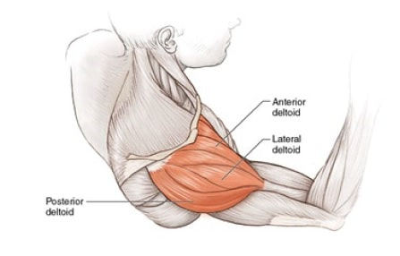
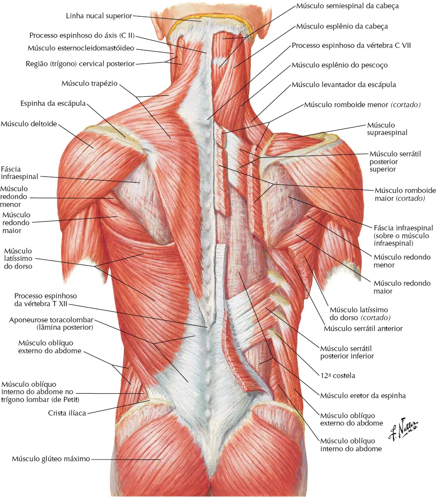
Fazem parte do manguito rotador os seguintes músculos:
Supra-espinal
Infra-espinal
Redondo menor
Subescapular
Este grupo comprime a cabeça umeral contra a glenóide, aumentando a estabilidade, resistindo ao deslizamento e à translação da mesma (nos sentidos ântero-posterior e ínfero-superior), permitindo ainda alguma rotação em torno dos seus três maiores eixos (ântero-posterior, médio-lateral e diáfiso-umeral), isoladamente ou em conjunto.
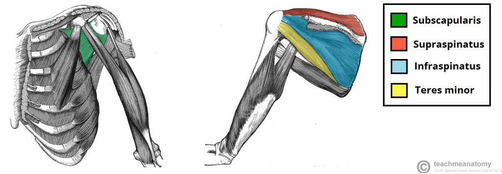
Fixação proximal: Fossa supra-espinal da escápula.
Fixação distal: Face superior do tubérculo maior do úmero.
Inervação: N. supra-escapular (C4, C5 e C6).
Ação: Inicia e ajuda o M. deltoide na abdução do braço e atua com os músculos do manguito rotador.
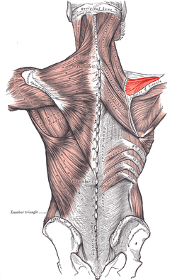
Fixação proximal: Fossa infra-espinal da escápula.
Fixação distal: Face média do tubérculo maior do úmero.
Inervação: N. supra-escapular (C5, C6).
Ação: Roda lateralmente o braço e atua com os músculos do manguito rotador.
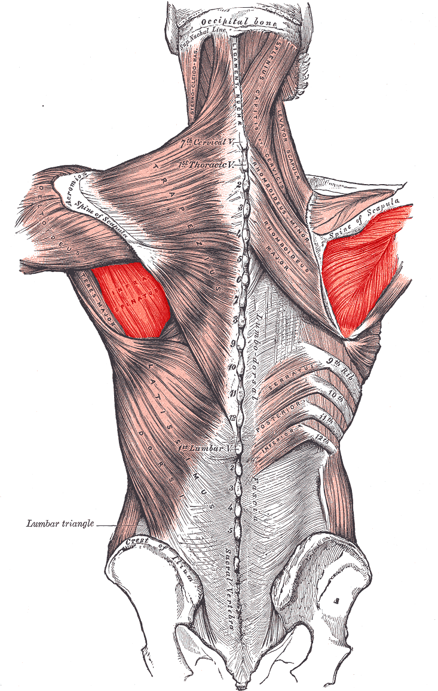
Fixação proximal: Parte média da margem lateral da escápula.
Fixação distal: Face inferior do tubérculo maior do úmero.
Inervação: N. axilar (C5, C6).
Ação: Roda lateralmente o braço e atua com os músculos do manguito rotador.
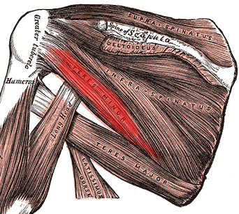
Fixação proximal: Face posterior do ângulo inferior da
escápula.
Fixação distal: Lábio medial do sulco intertubercular do
úmero.
Inervação: N. subescapular inferior (C5, C6).
Ação: Aduz e roda medialmente o braço.
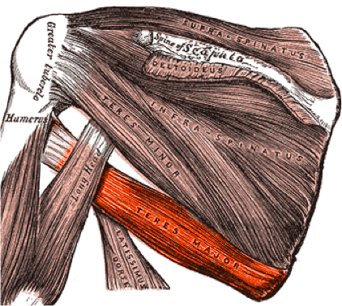
Fixação proximal: Fossa subescapular.
Fixação distal: Tubérculo menor.
Inervação: Nn. subescapulares superior e inferior (C5, C6, C7).
Ação: Roda medialmente o braço. Como parte do manguito rotador, ajuda a manter a cabeça do úmero na cavidade glenoidal.
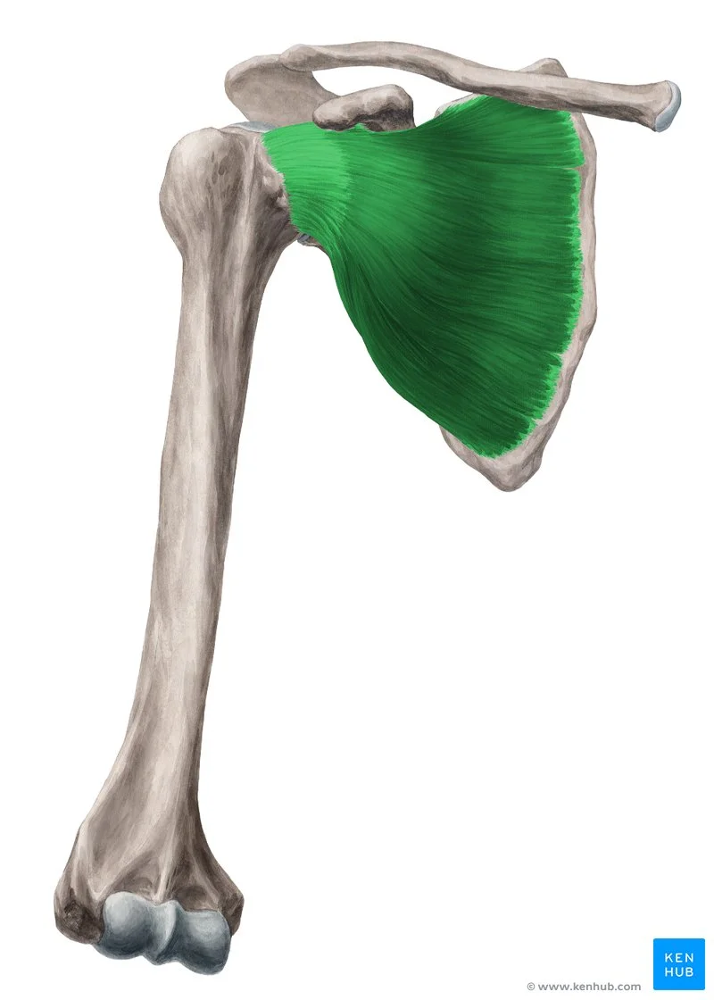
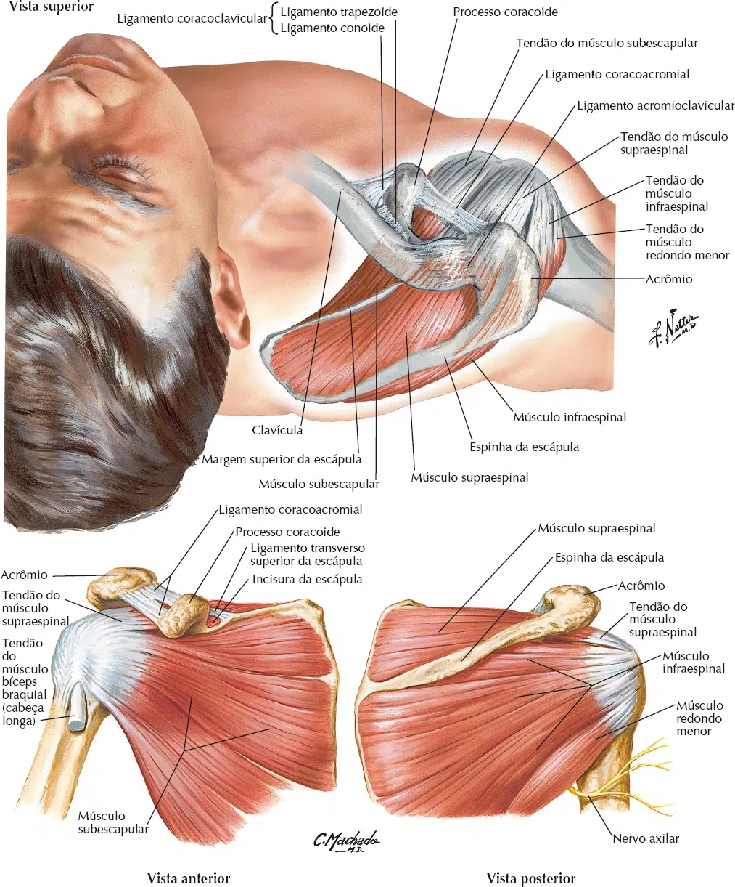
Fixação proximal: Terço medial da linha nucal superior; protuberância occipital externa; ligamento nucal; processos espinhosos das vértebras C7 a T12.
Fixação distal: Terço lateral da clavícula; acrômio e espinha da escápula.
Inervação: Nervo acessório (XI par de n. craniano – fibras motoras) e nervos espinais C3, C4 (fibras de dor e proprioceptivas).
Ação:
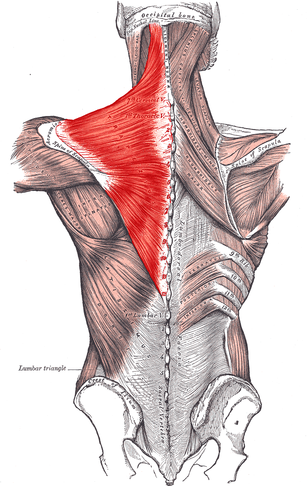
Fixação proximal: Processos espinhosos das 6 vértebras
torácicas inferiores, fáscia toracolombar, crista ilíaca, e 3 ou 4 costelas inferiores.
Fixação distal: Assoalho do sulco intertubercular.
Inervação: Nervo Toracodorsal (C6, C7 e C8).
Ação: Estende, aduz e gira medialmente o úmero; eleva o corpo em direção aos braços durante a escalada.
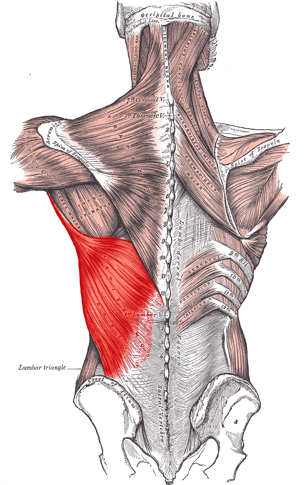
Fixação proximal: Tubérculos posteriores dos processos transversos das vértebras, C1 a C4.
Fixação distal: Margem medial da escápula superiormente à raiz da espinha da escápula.
Inervação: Nn. dorsal da escápula (C4, C5) e cervical (C3, C4).
Ação: Eleva a escápula e gira sua cavidade glenoidal inferiormente por meio de rotação da escápula
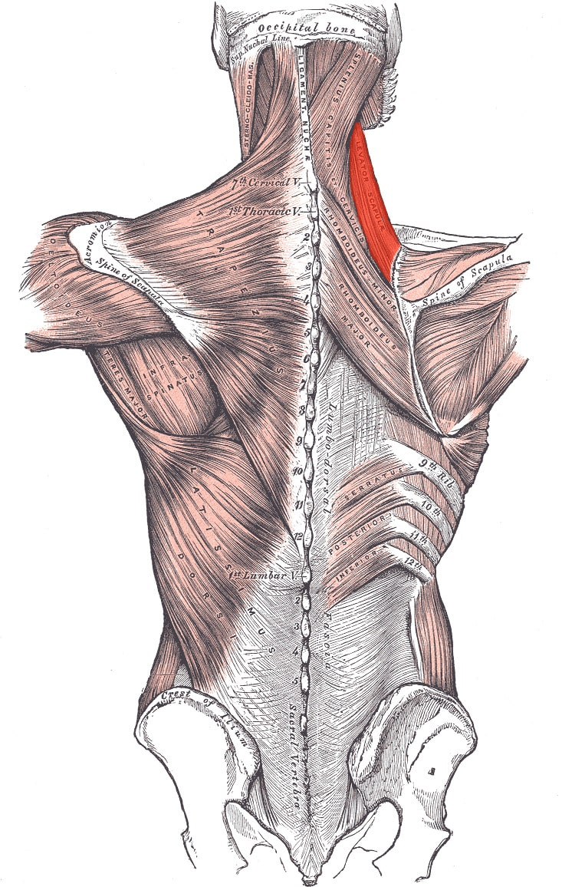
Fixação proximal: ligamento nucal, processos espinhosos das vértebras C7 e T1.
Fixação distal: área triangular uniforme na extremidade
medial da espinha da escápula.
Inervação: Nervo dorsal da escápula (C4 e C5).
Ação: Retrae a escápula e gira a cavidade glenoidal inferiormente; fixa a escápula à parede torácica.
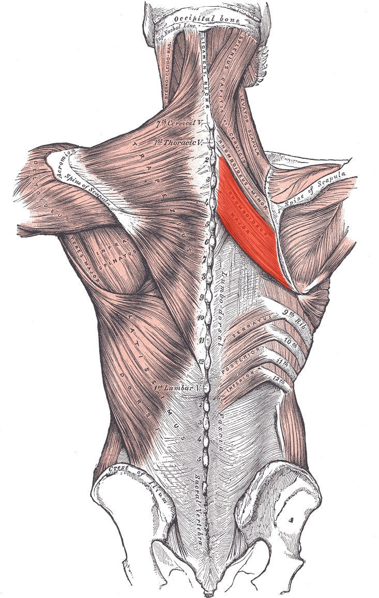
Fixação proximal: processos espinhosos das vértebras T 2 a T5.
Fixação distal: margem medial da escápula a partir do nível da espinha até o ângulo inferior.
Inervação: Nervo dorsal da escápula (C4 e C5).
Ação: Retrae a escápula e gira a cavidade glenoidal inferiormente; fixa a escápula à parede torácica.
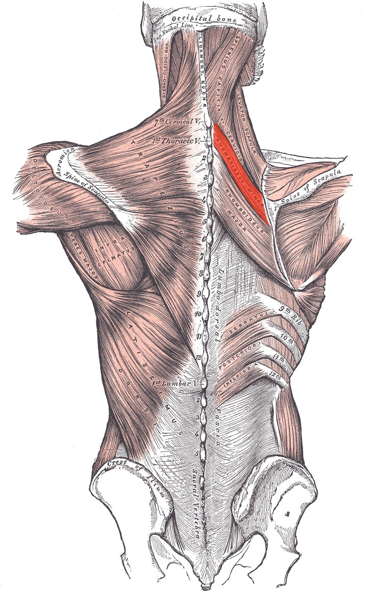